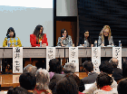
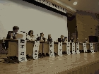

Event
-  International symposium hosted by Medwatcher Japan "The Current Status of Worldwide Injuries from the HPV Vaccine" was a great success
-  Symposium "Problems with the HPV Vaccine" -- Reports from Japan and Overseas --
- Symposium " Consideration of Pharmacovigilance --Lessons from the adverse effect of HPV vaccination"
- YAKUGAI Ombudsperson
- Tie-up Group
- 2014-07-27
- Symposium " Consideration of Pharmacovigilance --Lessons from the adverse effect of HPV vaccination"
Topics
- YAKUGAI Ombudsperson
- Tie-up Group
- 2016-11-02
- Open letter on the Discussion Meeting on Cervical Cancer Prevention Vaccines submitted to MHLW
- 2014-07-27
- Symposium " Consideration of Pharmacovigilance --Lessons from the adverse effect of HPV vaccination"